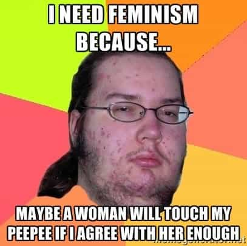

Corey is an iconoclast and the author of 'Man's Fight for Existence'. He believes that the key to life is for men to honour their primal nature. Visit his new website at primalexistence.com


If you want to fight the disease that is feminism, you should know that there are different strains with their own characteristics. And depending on their form, you must counter them the right way for maximum results.
Oftentimes, it’s best to simply ignore them for these losers are simply seeking ways to provoke you and drag you down to their level, but there are some actions you can take to counter them. First, know what you’re trying to accomplish. If you just lash out in hostility, you’ll simply confirm their beliefs that masculinity and men in general is something toxic that needs to be controlled. It might feel good in the short-term, but it offers very little in terms of results. If defeating feminism is your goal, then you must aim for these three results:
If you’re unable to do any of the three, you’re likely wasting your time and energy. You wouldn’t get angry and waste your time insulting a dog shit on the sidewalk, so why would you do the same for some harpies desperate for male attention? In those cases, it is just better to avoid contact and carry on.
Now, the following types of feminists are the more visible and dominant ones you’ll encounter. Of course, one woman may possess traits that overlap these types, in those cases simply use your judgement on how to deal with them.
Trust me, no one can mistake you for a girl or rape you even if they tried.
These hapless women are barely even feminists. These sad individuals have only just jumped on the feminist wagon so that they can blame men for their own miserable (single) lives to feel better about themselves. These women are usually obese, ugly, and have terrible attitudes which prevents them from finding a male partner that will cure them of their man-hating. They’re essentially the female version of the MGTOW.
Counter: Ignore them and let them drown in their own misery.
They’re fat, they’re ugly, they’re disgusting, and they know it. They also know that they can’t compete with women who are thinner and more attractive (not to mention being tormented with envy), so they must distort what it means to be beuatiful and healthy so that they can at least safe-guard their petty self-esteem.
Counter: Never let being a fat pile of lard become the new normal. Mock them while encouraging healthy lifestyle.
They love attention and they get turned on by being manhandled.
These are the mentally unstable radical feminists. They’re the most aggressive, violent, and repulsive of the feminists listed here. If any men behaved the same way as these degenerates, they’d be locked up and the media circus would have a field day reporting on a violent misogynist group that had gone wild. (You can also tell that the “moderate” feminists implicitly support them by the way they keep quiet like the cowards they are).
Counter: You should avoid these human garbage completely. As tough as they pretend to be, as soon as a finger is laid on them or if someone says something mean, they’ll immediately act like a helpless little girl to play the victim. The best thing to do is to use them to taint the feminist movement in the eyes of those who are neutral.

Actually, much like yourself, girls are more likely to pretend they’re smart and brag about their education to impress a man.
Believe it or not, most feminists are not blue-haired orangutans that screech at your face. We just get that impression because it’s the freaks that make all noise. I’ve actually met quite a number of pleasant (and feminine) women who called themselves feminists. I get the impression that these women only decided to associate with the movement because they bought into the all the lies of feminism without ever hearing any counter-arguments. If you approach them calmly and explain things in facts without getting emotional, many will actually listen to you.
How we deal with the moderates will determine how many of them will see the truth and convert or at least distance themselves from the feminism label. Of all the types of feminists, this is where our battle should be fought.
Counter: Start by throwing out small tidbits of facts that go against the feminist myth without any emotion or opinion to see how they react. If they’re receptive, continue on and dismantle the feminist ideology step by step in a rational manner.

Many young and impressionable people, especially when they’re in college, want to feel like they’re making a difference in the world. Some take up cause for the environment, some decide to help the poor, some volunteer to contribute to society, and some end up fighting for social justice and feminism.
These naive kids literally believe that feminism “just means equality for women.” They don’t have any opinions of their own and they simply parrot the lies they’ve been told to believe.
Counter: Assess their level of fanaticism. Many are emotionally charged and will not listen to counter-arguments no matter what. Seek out the moderates among them and bombard them with cold facts. You might be able to salvage some from going full radical.
These feminists are the women’s rights version of champagne socialists. They live luxurious lives thanks to their fathers or their supplicating lap-dog husbands, yet they complain about the invisible patriarchy. They’re extremely condescending and seem to believe that they are intellectual powerhouses.
Counter: These women are so out of touch with reality that you’ll be able to find many lies and double-standards in everything they say. Expose them for the public to see so that those on the fence will know how ridiculous and sanctimonious they are. These con-artists are also very thin-skinned, so it won’t be too hard to make them shut up by challenging them.
A special subset of privileged feminists, celebrity feminists only wear the feminist label to boost their sense of self-importance or to appear hip to the fans with their virtue signaling. Most of these entertainers are actually completely clueless and are blind to their own hypocrisy, often more so than the average feminists.
Counter: Use these tools to your advantage. Point out how ridiculous and hypocritical they are to the masses so that they’ll see how inane the entire feminist movement is.
These feminists are sick in the head, plain and simple. They have no value to speak of and they hate themselves almost as much as the people they’re trying to provoke. These leaches thrive from the attention they get by making others feel disgusted. These are people who deliberately make themselves as disgusting as possible by growing armpit hair, vandalizing their own bodies, getting fat, and by smearing their menstrual blood on their faces. You must understand that this is not just an act of insanity but a deliberate attack on your senses to force a reaction out of you.
Counter: Ignore them and use them as the poster child of feminism. Force the moderates to either acknowledge them as one of their own or to disown them.

I almost feel sorry for these losers who don’t even realize that they’re being used as pawns. These emotionally and sexually underdeveloped man-children hate themselves so much that they supplicate to feminism in hopes of gaining female acceptance. They feel so guilty about their own existence and sexuality that they rage against other men and accuse those who are actually enjoying relationship with women of being misogynists and rapists. You should also know that many of these individuals are severely unstable and exhibit paranoia and stalker behavior.
Counter: Male feminists are their own worst enemies, you have nothing to gain by interacting with them. Don’t give them the attention they desperately seek (remember, they’re immature) and just continue being the better man—nothing will enrage them more.
Above all, the best way to defeat feminism is by continuing to be a man while supporting others doing the same. You should take pride in the fact that your very existence is a thorn to the feminists and a defiance against the establishment. In the future, a path may unfold for an open and active resistance, but for now, you must keep steady and solid and wait for the time to come.
 If you like this article and are concerned about the future of the Western world, check out Roosh's book Free Speech Isn't Free. It gives an inside look to how the globalist establishment is attempting to marginalize masculine men with a leftist agenda that promotes censorship, feminism, and sterility. It also shares key knowledge and tools that you can use to defend yourself against social justice attacks. Click here to learn more about the book. Your support will help maintain our operation.
If you like this article and are concerned about the future of the Western world, check out Roosh's book Free Speech Isn't Free. It gives an inside look to how the globalist establishment is attempting to marginalize masculine men with a leftist agenda that promotes censorship, feminism, and sterility. It also shares key knowledge and tools that you can use to defend yourself against social justice attacks. Click here to learn more about the book. Your support will help maintain our operation.
Read More: Why You Should Not Go See “Mad Max: Feminist Road”
{kind=link}